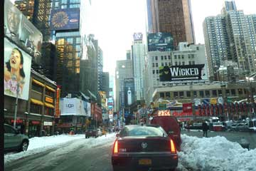
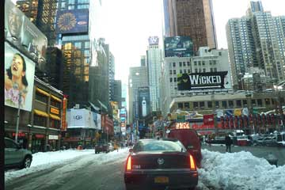

En dag i Valencia går så let. Vi fik Morgenkaffe og ostebrød på cafeen, hvor vi sad med vores computere indtil frokost. Købte så brød og ost i et supermarked og spiste på hotelværelsets altan. Inde i byen hang der mandariner på træerne og nogle mandeltræer blomstrede. Mange familier sad og spiste udenfor cafeerne i centrum på denne solrige lørdag. Skobutikkene var åbne, og Hjalte fik købt sig et par gode lædersko. På hjemvejen fandt vi et sted hvor vi fik ansjoser med ost - Spanierne mestrer de små lækre serveringer. Da vi kom trætte hjem efter at have gået til fods hele eftermiddagen, spiste vi resterne fra frokosten og så nyheder i fjernsynet.


Her begynder verdensrejsens tredie og sidste etape, som går gennem Europa, for at slutte i Danmark. Vi kørte med Grenåbanen til Århus, tog lyntoget til København, og derfra fly til Madrid og Valencia. En rejse fra vinter til forår. Vi vågnede til solskin og 20 graders varme, det var næsten ikke til at fatte. Lige ved siden af Hostal Waksman, hvor vi bor, ligger en cafe med borde udenfor og internet, det perfekte sted at indtage sine måltider. Vi købte buskort og efter to besøg på et kontor, skulle det være sikkert at vi kan få Grønne ud af containeren tirsdag formiddag. I dagens løb fik vi gået en hel del i den smukke europæiske storby. Omkring solnedgang forvildede vi os ind i et landskab af eventyrlig arkitektur omkring en koncertsal og nogle museer. Et sted hvor vi senere vil gå på opdagelse.
Nina og Hjalte


Jeg Grønne, kan næsten ikke vente med at sige det: ER jeg virkelig den første rigtige elbil som kører jorden rundt? Tænk at det skulle være en danskbygget elbil som mig! Ganske vidst er jeg født som en japansk Nissan, men jeg konverterede til el i 2010. Mine ædlere dele, alt det elektriske, er sat i på Afutures værksted i Sakskøbing. Jeg har dansk registreringsattest, og regner med at ende mine dage på et museum. Nåh...Jeg er jo ikke hele vejen rundt endnu. Jeg mangler stadig sydeuropa. Det er næsten alt for spændende, jeg må holde tungen lige i munden, og passe på ikke at gå i stå på de sidste kilometer...
Hilsen fra Grønne
Vælg "Foredrag" øverst på siden. Efter midten af maj måned vil vi køre rundt i Danmark for at holde foredrag og lave elbilarrangementer. Der har allerede været flere forespørgsler. Så hvis du er interesseret i at lave et arrangement eller et foredrag i 2011-12 så send en mail til nina@moto-mundo.com De som komme først kan reservere de bedste dage. Nina og Hjalte
Firmaet Afuture som har bygget vores elbil er gået konkurs. Det får ikke nogen betydning for vores verdensomrejse, da vi selv ejer bilen og betaler rejsen. Vi fortsætter derfor ufortrødent, og håber på at bilen aldrig går i stykker, nu da der ikke længere er et værksted. Søren har dog lovet fortsat at supporte os med gode råd... han fortsætter på elbilfronten på anden vis.
Nina og Hjalte

2008 kørte Solartaxi jorden rundt med et letvægtskøretøj der havde solceller på taget, plus 6m2 solceller på en trailer der gav strøm til trehjulerens elmotor.
2010. Odyssey of pioneers - Urfirmaet Tagheuer har sidste år bragt en Tesla, den fantastiske elektriske sportsvogn, jorden rundt sammen med et reklameshows for urene. Den fine Tesla blev transporteret rundt mellem de 16 store byer den besøgte - formodentlig pr. fly. Bilen ses kun i selskab med herrer i grå jakkesæt og elegante damer med et Tagheuer ur på armen.
2011. Zero Race for elbiler er på vej jorden rundt med tre elektriske køretøjer. De skal være i mål i Schweiz inden d 16-2. Der deltager en el-scooter, en kabinemotorcykel og en trehjuler. Det der mangler blandt teamets køretøjer er en rigtig elbil.
Kender du andre elbiler som har kørt jorden rundt, så send en mail til nina@moto-mundo.com

Grønne var allerede sendt af sted i en container, og vores sidste dag i New York gik vi en lang tur til Gugenheimmuseet. Længere end forhallen kom vi nu ikke da udstillingen var ommer ombygning. Så sad vi lidt og så på de menge forskellige mennesker. Da vi vandrede ned ad 5.avenue, en af new Yorks dyreste forretningsgader, fik jeg i et vindue øje på et par skønne selskabssko - og se om de ikke lige passede! Med skoene i en bærepose gik Hjalte og jeg en lang tur gennem den snedækkede Central Park. Til sidst hentede vi vores bagage, og tog afsked med Piv og Rita. Det krævede en tur med metroen og to forskellige togbaner at komme ud til JFK lufthavnen.


Kunstsamleren Tatjana og hendes datter Natalia, som vi mødte i Moskva for 23 år siden bor nu i New York. De lever af at udleje deres malerisamling, som de stadig udvider. Natalia, som vi først så som en lille pige er nu blevet voksen og gift med en amerikaner. De besøgte os hos Piv og Rita, og på trods af at de kom fire timer for sent, var det hyggeligt at høre om hvordan det var gået dem i USA. Deres forretning går godt, og de er stadig meget russiske og rejser ustandselig frem og tilbage mellem New York og Moskva
 

I nat blev New York ramt af en voldsom snestorm. Trafikken er næsten gået i stå og de mange skoler og undervisningsanstalter er lukkede. De biler som stårparkeret langs fortovene bliver begravet i endnu mere sne når sneplovene kører på vejene.
Heldigvis stod Grønne parkeret på en nærliggende tankstation hvor vi fandt den ved godt helbred dækket af en tyk snedyne. Vi skovlede sneen af bilen for at køre en tur downtown på Manhattan og nyde det usædvanlige syn af New York begravet i sne.

Trafikken var i kaos, det sneede stadig og mange New Yorkere blev indendøre. Vi tog metroen til Downtovn og det så det helt romantisk ud med sne på træerne og begravede biler. På en restaurant spiste vi burgere og drak en øl sammen med Piv og Rita. I Den Danske Sømandskirke fortalte vi om vores jordomrejse i Grønne, og viste billeder på en tv skærm for det lille og meget interesserede publikum, der var mødt frem trods snevejret.
Nina